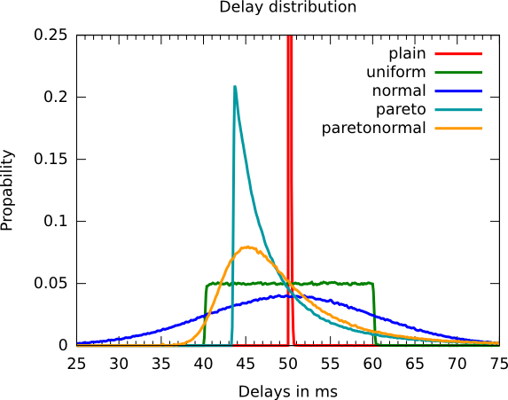

ToMaTo
Topology Management Tool
Introduction
ToMaTo is a topology-oriented control framework for virtual networking experiments.
Control framework
- Like Planet-Lab, Emulab, ...
- Developed in the German-Lab project
- Open-Source project (hosted on Github)
Virtual networking experiments
- Developed for networking experiments
- E.g. networking research or software testing
- All parts of the experiment setup are virtual
Topology-oriented
- Basic abstraction: Network topology
- Each experiment has its own topology
- Topologies contain connected elements
Advanced features
- Direct console access
- Link emulation
- Packet capturing
Topology
Example
- One central server
- 4 clients, connected with 2 switches
- Internet connected to server
Graphical representation
- Icons show element type
- Colored icons show virtualization technology
- Link color shows network segments
- Link style shows link attributes
Per Topology
- Accounting
- Permissions
VM Elements
KVM
- Full virtualization
- Integrated into Linux Kernel
OpenVZ
- Container virtualization
- Added to Linux Kernel via patch
Scripts
- Programming language virtualization
- Installed as software
Additional elements
- Easy to add more
- Planned: VirtualBox, LXC
VM Elements - Features
| KVM | OpenVZ | Scripts | |
|---|---|---|---|
| # per node | ~20 | ~100 | ~1000 |
| any x86 OS |  |  | |
| Linux OS | | | |
| Kernel space | | | () |
| Console support | | | |
| Mouse/Keyboard input | | | |
| Layer2 connectivity | | | |
| Interface configuration | | | |
Repy scripts
Repy
- Restricted Python (Sandbox)
- Technology from Seattle testbed
- Modified for ToMaTo
- Functions for receiving and sending raw ethernet packages
Code sample
Library
- Basic protocols implemented: Ethernet, IPv4, TCP, UDP and ICMP
- Even some higher protocols: DHCP and DNS
- Examples for: NAT router, DHCP server, DNS server, Switch, ...
- Can be extended within the language
Network Elements
VPN: Tinc
- Full mesh VPN without server
- Fully contained, virtual network
- Cross-site layer 2 connectivity
- Open endpoints allow federation
Tunnel: VTun
- Layer 2 tunnel over UDP
- Open endpoints allow federation
External networks
- Bridge into local network segments
- E.g. Internet or local research network
Webfrontend - Editor
Webfrontend - Usage Statistics
Console Access
Multiple VNC options
- HTML 5
- Java applet
- Client software
Link Emulation

Properties
- Bandwidth
- Latency
- Jitter
- Packet loss
- Corruption & duplication
Statistical distributions
Packet Capturing
Properties
- Captures packages on the wire
- Direct filtering
- Format: Pcap, (compatible with Wireshark)
- Two modes: Download, Live capture
Cloudshark
Online tool for packet analysis
ToMaTo Structure
Facility hosts
- Running the ToMaTo hostmanager
- OS: Proxmox VE + additional software
- Organized in sites
- No need for layer 2 connectivity
Backend component
- Central component for orchestration
- Controls hosts via XML-RPC
- User management via authentication plugins
- Provides XML-RPC interface
Multiple frontends
- Web-based, Command-line, Automated scripts, ...
- Use common XML-RPC interface
- More frontends possible
German-Lab Testbed
Hardware in German-Lab
- Strong nodes: 16 GB Ram, 2 Quad-Cores, 4 Gigabit LAN
- 59 nodes in Kaiserslautern
- 25 nodes in Würzburg, Darmstadt, Karlsruhe and Munich each
ToMaTo in German-Lab
- 58 ToMaTo nodes in whole German-Lab
- 20 with newest ToMaTo version 3
Additional hardware and links
- Multiple OpenFlow switches connected to ToMaTo in Würzburg
- Gigabit link to GENI connected to ToMaTo in Kaiserslautern
Access policy
- Access for academic users based on topic
- Otherwise, just ask
Use case: German-Lab DEEP
Scenario
- Intrusion detection
- Attack mitigation
- Voip scenario
ToMaTo usage
- Very complex topology
- Usage of smart middle-boxes
- External software components
Use case: IGreen
Scenario
- Services for agriculture
- Support for mobile devices
- How does latency affect QoE
ToMaTo usage
- Simple topology
- Special template with Android emulator
- Usage of link emulation
Use case: Malware Analysis
Scenario
- Analysis of worm
- Focus on network behavior
- Fully contained topology
ToMaTo usage
- Simple topology
- No connection to Internet
- Usage of packet capturing
Framework Comparison
| Planet-Lab | Emulab | Seattle | ToMaTo | |
|---|---|---|---|---|
| Multiple sites | | | | |
| Physical hardware access | | | | |
| End-System virtualization | | | | |
| Network virtualization | | | | |
| Layer 2 access | | | | |
| Link emulation | | | | |
| Packet capturing | | | | |
| High traffic (>1 GBit) | | | | |
| Resource profiles | | | | |
Status & Plan
Versions
- Version 2.5 (mid 2012)
- Version 3.0 (April 2013)
Planned element types & features
- VLan
- Support for OpenStack (external work)
- Data upload/download (Bachelor thesis)
- Scripted Experiments, support for software testing
More Information
Websites
- ToMaTo project: dswd.github.com/ToMaTo
- ToMaTo German-Lab testbed: tomato.german-lab.de
- ToMaTo German-Lab testbed (version 3): tomato3.german-lab.de
- German-Lab: www.german-lab.de
Publications
- ToMaTo - a network experimentation tool
Dennis Schwerdel, David Hock, Daniel Günther, Bernd Reuther, Paul Müller and Phuoc Tran-Gia
7th International ICST Conference on Testbeds and Research Infrastructures for the Development of Networks and Communities (TridentCom 2011), Shanghai, China, April 2011.
Contact
University of Kaiserslautern
Integrated Communication Systems Lab
Dennis Schwerdel
Email: schwerdel@informatik.uni-kl.de
/
#